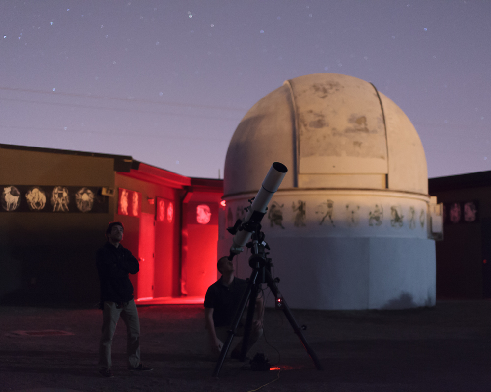
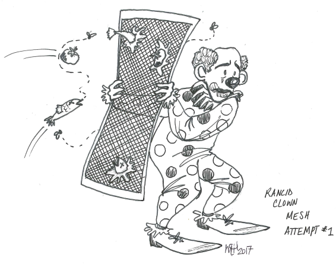
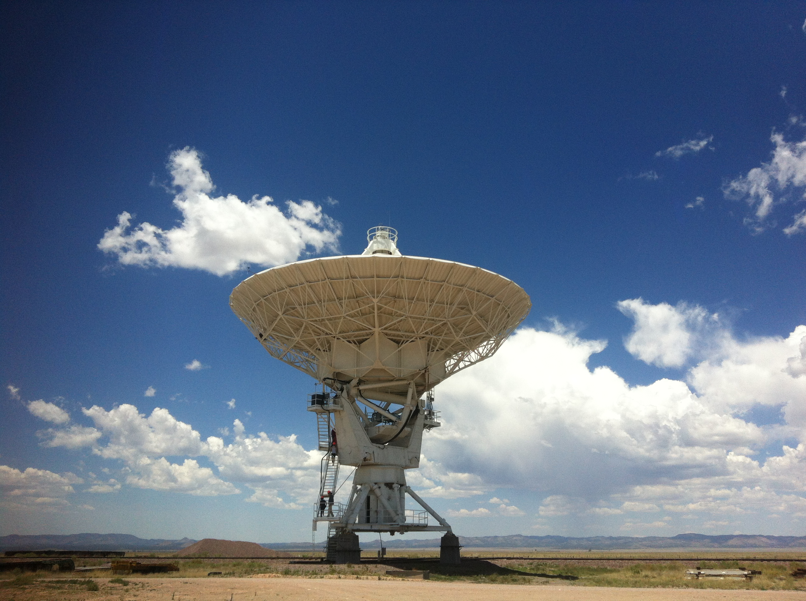
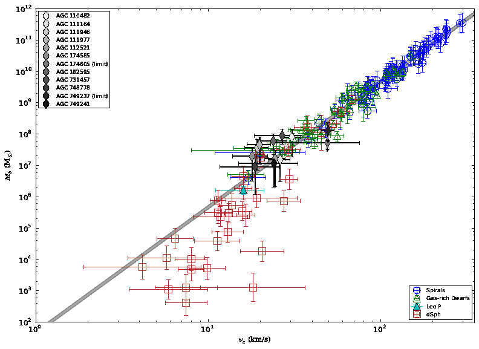
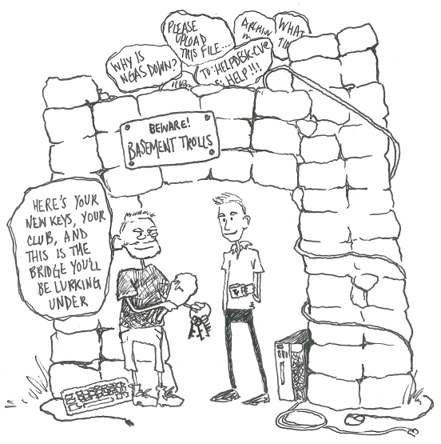

About me
I am an American scholar currently working on the support staff for the Atacama Large Millimeter/sub-millimeter Array (ALMA) project at the North American ALMA Science Center (NAASC) headquarters on the grounds of the University of Virginia in Charlottesville.
For the last half decade I have been helping international collaborations solve complex problems in computing and astrophysics. Some of my particular professional pursuits include data collection and representation, the development and operation of advanced technology, and technical research investigations that expand the limits of human understanding. I matriculated from the University of Hawai'i - Hilo in 2014 after three years' practical and theoretical study in the natural sciences.

My primary long-term goal is to engage in and facilitate exploration that advances collective knowledge of the most awesome frontiers and eventually ensures permanent human presence in free space. In the meantime I have staken a claim to the title of "Most Interested Man on the World." I like to roam forests, solve puzzles, and test my limits. My favorite autonymous anagram is "Rancid Clown Mesh" and I have never lost an eating contest.

About NRAO
The National Radio Astronomy Observatory (NRAO) is a facility of the National Science Foundation (NSF), operated under cooperative agreement by Associated Universities, Inc. (AUI)
NRAO is one of the world's foremost institutions for research and development specializing in observational astrophysics and related technology. We design, build, and operate interferometers - the Very Large Array (VLA) in the desert of New Mexico, ALMA in the desert of northern Chile, and the Very Long Baseline Array (VLBA) in locations across the United States. Many of the technologies and instruments in use at NRAO telescopes were designed and fabricated at the Central Development Laboratory (CDL), also located in Charlottesville. We are also closely affiliated with the Green Bank Observatory (GBO), located over the mountains in West Virginia. The Next-Generation VLA (ngVLA) is the NRAO's next major interferometer project, and is scheduled for construction and eventual use some time after 2020.

Founded in 1956, the NRAO provides state-of-the-art radio telescope facilities for use by the international scientific community. NRAO telescopes are open to all astronomers regardless of institutional or national affiliation. Observing time on NRAO telescopes is available on a competitive basis to qualified scientists after evaluation of research proposals on the basis of scientific merit, the capability of the instruments to do the work, and the availability of the telescope during the requested time. NRAO also provides both formal and informal programs in education and public outreach for teachers, students, the general public, and the media.
Science
Introduction
My specialized scientific interests include multiwavelength astronomy, observational cosmology, and galaxy evolution (ADS: Refereed Papers). I am an active researcher in the field of observational astrophysics, specializing in dwarf galaxy research with my collaborators on the Survey of HI in Extremely Low-mass Dwarfs (SHIELD) research team, led by Dr. John Cannon, Professor at Macalester College. I also participate in collaborations attempting to use radio telescopes to constrain the physical properties of other celestial objects, like our moon, other planets, and extragalactic masers.

Some other questions that interest me now
How can we most efficiently utilize existing computing resources (i.e., processors that don't use qubits) and currently-deployed technology (like public clouds and the NRAO high-performance computing clusters) to solve scientific problems?
Can observations of emission from the vibrational transitions of carbon ions illuminate new and improved constraints on star formation physics, especially in galaxies which are relatively devoid of heavy elements?
Which are the most accurate parametric models of galaxy structure, kinematics, and dynamics? Can these models have sufficient predictive capability to unite the (remarkably successful and precise) predictions of cold-dark-matter cosomology with detailed constraints imposed by stellar and chemical observations?
What is the most effective and generalizable way to study populations of cosmic objects? For a (somewhat dated) description of how modern astronomy surveys the sky, see Djorgovski et al., 2013. Here are some methods I am considering:
- Complete, instrument-limited, time-domain samples of the entire sky, like the Planck satellite or the planned Large Synoptic Survey Telescope (LSST)
- Reductionist statistical inference using "typical" results or randomly generated simulations as prior probability distributions?
- Small sample observation of sources with extreme characteristics using matched detectors?
- Coordinated bolometric event-triggered observations of unique targets?
- Something else entirely, like improving theory or training neural networks?
Reference
Tools
Useful Links
Quick access
Metrics
Administrativa
NRAO Software Links
SST Links
Unsorted NAASC Links
Sysadmin Links
AoD Links
Miscellany
Check it out
References
Web Resources
D&D
Personal

Medical Literature
As have many others in the last couple of years, I became aware of the ketogenic diet while watching videos and reading on the web. There were some public sources of information that seemed reliable, such as Craig Clarke's ruled.me, Jason Fung's dietdoctor.com, Menno Henselmans's Bayesian Bodybuilding, Ned Kock's Healthcorrelator blog, and Paul Ingraham's painscience.com. I did experience some subjective benefits during my initial forays into eating mostly fat, but I was frustrated by inconsistency. Eventually (after learning of the 2016 Nobel Prize in medicine) I started to investigate more seriously using my professional mode of inquiry. I consulted the published scientific literature attempting to find verifiable evidence in support or refutation of the promising claims I had been hearing.
Attempting to optimize my nutrition, I hunted for the orginal ketogenic diet protocol exactly as administered to epileptic children at Johns Hopkins in the early twentieth century. From this I realized that time restriction on feeding periods is a fundamental component of the effective administration of any medical intervention. I began to search the literature for concrete data related to the practice of prolonged fasting, specifically its impact on recovery. I have since learned more about organic chemistry, the processes of metabolism and various biochemical pathways, as well as exercise physiology and the potential benefits and limitations of different diets and exercise regimens. Exposure to this knowledge has had a measurable positive impact on my health, especially with respect to alertness, mood, and athletic performance.
These days I am reasonably convinced that the improvements in my health have had a stronger correlation with meal frequency than with the nutritive contents of the foods I consume during feeding periods. It still seems important how much I eat, train, and maintain my body's supply of certain key nutrients, especially potassium, sodium, water, testosterone, and cholecalciferol. Some of the resources I found especially helpful are aggregated here, in the hope that their assemblage may prove convenient.
Tl;dr: Reviewing these (and other) publications helped me learn how to better prioritize my basic biological needs. I try my best to restrict caloric intake by fasting often, drink saltwater to stay hydrated, frequently exercise at submaximal intensity, get regular sleep, go outside in sunlight, eat sufficient cholestrol and protein, strategically limit carbohydrate consumption, and cook my cruciferous vegetables.
- Aggarwal BB, Ichikawa H. Molecular targets and anticancer potential of indole-3-carbinol and its derivatives. Cell Cycle. 2005 Sep;4(9):1201-15. doi:10.4161/cc.4.9.1993.
- Amodu A, Abramowitz MK. Dietary acid, age, and serum bicarbonate levels among adults in the United States. Clinical Journal of the American Society of Nephrology : CJASN. 2013;8(12):2034-2042. doi:10.2215/CJN.03600413.
- Aragon AA, Schoenfeld BJ. Nutrient timing revisited: is there a post-exercise anabolic window? Journal of the International Society of Sports Nutrition 2013;10:5. doi:10.1186/1550-2783-10-5.
- Atherton PJ, Smith K. Muscle protein synthesis in response to nutrition and exercise. The Journal of Physiology. 2012;590:1049-1057. doi:10.1113/jphysiol.2011.225003.
- Bajaj JK, Salwan P, Salwan S. Various possible toxicants involved in thyroid dysfunction: a review. Journal of Clinical and Diagnostic Research : JCDR. 2016;10(1):FE01-FE03. doi:10.7860/JCDR/2016/15195.7092..
- Beaven CM, Hopkins WG, Hansen KT, Wood MR, Cronin JB, Lowe TE. Dose effect of caffeine on testosterone and cortisol responses to resistance exercise. Int J Sport Nutr Exerc Metab. 2008 Apr;18(2):131-41. PMID:18458357.
- Behm DG, St-Pierre DM. Effects of fatigue duration and muscle type on voluntary and evoked contractile properties. J Appl Physiol (1985). 1997 May;82(5):1654-61.doi:10.1152/jappl.1997.82.5.1654.
- Bellasi A, Di Micco L, Santoro D, et al. Correction of metabolic acidosis improves insulin resistance in chronic kidney disease. BMC Nephrology. 2016;17:158. doi:10.1186/s12882-016-0372-x.
- Bramble DM, Lieberman DE. Endurance running and the evolution of Homo. Nature. 2004 Nov 18;432(7015):345-52. doi:10.1038/nature03052.
- Borde R, Hortobágyi T, Granacher U. Dose–response relationships of resistance training in healthy old adults: a systematic review and meta-analysis. Sports Medicine. 2015;45(12):1693-1720. doi:10.1007/s40279-015-0385-9.
- Bridet L1, Martin JJ, Nuno JL. Acute liver damage and anorexia nervosa: a case report. Turk J Gastroenterol. 2014 Apr;25(2):205-8. doi:10.5152/tjg.2014.2531.
- Chakravarty EF, Hubert HB, Lingala VB, Zatarain E, Fries JF. Long distance running and knee osteoarthritis. A prospective study. Am J Prev Med. 2008 Aug;35(2):133-8. doi:10.1016/j.amepre.2008.03.032.
- Churchward-Venne TA, Burd NA, Phillips SM. Nutritional regulation of muscle protein synthesis with resistance exercise: strategies to enhance anabolism. Nutrition & Metabolism. 2012;9:40. doi:10.1186/1743-7075-9-40.
- Connolly DAJ, Reed BV, McHugh MP. The repeated bout effect: does evidence for a crossover effect exist? Journal of Sports Science & Medicine. 2002;1(3):80-86. PMID:24701128.
- Corona G, Giagulli VA, Maseroli E, Vignozzi L, Aversa A, Zitzmann M, Saad F, Mannucci E, Maggi M. Testosterone supplementation and body composition: results from a meta-analysis study. Eur J Endocrinol. 2016 Mar;174(3):R99-116. doi: 10.1530/EJE-15-0262. Epub 2015 Nov 4. doi:10.1530/EJE-15-0262.
- Damas F, Phillips SM, Libardi CA, et al. Resistance training‐induced changes in integrated myofibrillar protein synthesis are related to hypertrophy only after attenuation of muscle damage. The Journal of Physiology. 2016;594(18):5209-5222. doi:10.1113/JP272472.
- Damas F, Phillips S, Vechin FC, et al. A review of resistance training-induced changes in skeletal muscle protein synthesis and their contribution to hypertrophy. Sports Med. 2015 Jun;45(6):801-7. doi:10.1007/s40279-015-0320-0 (paywall)
- Dankel SJ, Mattocks KT, Jessee MB, Buckner SL, Mouser JG, Counts BR, Laurentino GC, Loenneke JP. Frequency: the overlooked resistance training variable for inducing muscle hypertrophy?. Sports Med. 2017 May;47(5):799-805. doi:10.1007/s40279-016-0640-8 (paywall)
- De Brito-Ashurst I, Varagunam M, Raftery MJ, Yaqoob MM. Bicarbonate supplementation slows progression of CKD and improves nutritional status. Journal of the American Society of Nephrology : JASN. 2009;20(9):2075-2084. doi:10.1681/ASN.2008111205.
- De Simone J. Reductionist inference-based medicine, i.e. EBM. J Eval Clin Pract. 2006 Aug;12(4):445-9. doi:10.1111/j.1365-2753.2006.00728.x (paywall)
- DeFronzo RA, Cooke CR, Andres R, Faloona GR, Davis PJ. The effect of insulin on renal handling of sodium, potassium, calcium, and phosphate in man. Journal of Clinical Investigation. 1975;55(4):845-855. PMID:1120786.
- Domínguez-Sanchéz MA, Bustos-Cruz RH, Velasco-Orjuela GP, et al. Acute Effects of High Intensity, Resistance, or Combined Protocol on the Increase of Level of Neurotrophic Factors in Physically Inactive Overweight Adults: The BrainFit Study. Frontiers in Physiology. 2018;9:741. doi:10.3389/fphys.2018.00741.
- Drenick EJ, Swendseid ME, Blahd WH, Tuttle SG. Prolonged starvation as treatment for severe obesity. JAMA. 1964;187(2):100–105. doi:10.1001/jama.1964.03060150024006 (paywall)
- Ehrnhoefer DE, Martin DDO, Schmidt ME, et al. Preventing mutant huntingtin proteolysis and intermittent fasting promote autophagy in models of Huntington disease. Acta Neuropathologica Communications. 2018;6:16. doi:10.1186/s40478-018-0518-0.
- Felig P, Owen OE, Wahren J, Cahill GF. Amino acid metabolism during prolonged starvation. Journal of Clinical Investigation. 1969;48(3):584-594. doi:10.1172/JCI106017.
- Felker P, Bunch R, Leung AM. Concentrations of thiocyanate and goitrin in human plasma, their precursor concentrations in brassica vegetables, and associated potential risk for hypothyroidism. Nutrition Reviews. 2016;74(4):248-258. doi:10.1093/nutrit/nuv110.
- Ferraro E, Giammarioli AM, Chiandotto S, Spoletini I, Rosano G. Exercise-induced skeletal muscle remodeling and metabolic adaptation: redox signaling and role of autophagy. Antioxidants & Redox Signaling. 2014;21(1):154-176. doi:10.1089/ars.2013.5773.
- Ferreira L, Pereira R, Hackney AC, Machado M. Repeated bout effect and cross-transfer: evidence of dominance influence. Journal of Sports Science & Medicine. 2012;11(4):773-774. PMID:24137077.
- Finn PF, Dice JF. Proteolytic and lipolytic responses to starvation. Nutrition. 2006 Jul-Aug;22(7-8):830-844. doi:10.1016/j.nut.2006.04.008 (paywall)
- Gabel K, Hoddy KK, Haggerty N, Song Jeehee, et al. Effects of 8-hour time restricted feeding on body weight and metabolic disease risk factors in obese adults: a pilot study. Nutrition and Healthy Aging. 2018;4:345–353. doi:10.3233/NHA-170036.
- Garrido N, Marinho DA, Reis VM, et al. Does combined dry land strength and aerobic training inhibit performance of young competitive swimmers? Journal of Sports Science & Medicine. 2010;9(2):300-310. PMID:24149700.
- Greene J, Louis J, Korostynska O, Mason A. State-of-the-art methods for skeletal muscle glycogen analysis in athletes. Newman JD, ed. Biosensors. 2017;7(1):11. doi:10.3390/bios7010011.
- Grgic J, Lazinica B, Mikulic P, Krieger JW, Schoenfeld BJ. The effects of short versus long inter-set rest intervals in resistance training on measures of muscle hypertrophy: A systematic review. Eur J Sport Sci. 2017 Sep;17(8):983-993. doi:10.1080/17461391.2017.1340524. (paywall)
- Gumz ML, Rabinowitz L, Wingo CS. An integrated view of potassium homeostasis. The New England journal of medicine. 2015;373(1):60-72. doi:10.1056/NEJMra1313341.
- Hartman MJ, Clark B, Bembens DA, Kilgore JL, Bemben MG. Comparisons between twice-daily and once-daily training sessions in male weight lifters. Int J Sports Physiol Perform. 2007 Jun;2(2):159-69. doi:10.1123/ijspp.2.2.159 (paywall)
- Hartman ML, Veldhuis JD, Johnson ML, Lee MM, Alberti KG, Samojlik E, Thorner MO. Augmented growth hormone (GH) secretory burst frequency and amplitude mediate enhanced GH secretion during a two-day fast in normal men. The Journal of Clinical Endocrinology & Metabolism, 1992;74(4):757-765. https://doi.org/10.1210/jcem.74.4.1548337 (paywall)
- Hespanhol Junior LC, Pillay JD, van Mechelen W, Verhagen E. Meta-analyses of the effects of habitual running on indices of health in physically inactive adults. Sports Medicine (Auckland, N.z). 2015;45(10):1455-1468. doi:10.1007/s40279-015-0359-y.
- Ho KY, Veldhuis JD, Johnson ML, et al. Fasting enhances growth hormone secretion and amplifies the complex rhythms of growth hormone secretion in man. Journal of Clinical Investigation. 1988;81(4):968-975. doi:10.1172/JCI113450.
- Hojo Y, Kawato S. Neurosteroids in adult hippocampus of male and female rodents: biosynthesis and actions of sex steroids. Front Endocrinol (Lausanne). 2018;23(9):183. doi:10.3389/fendo.2018.00183.
- Ioannidis, JPA. Why most published research findings are false. PLoS Med. 2005;2(8):124. 10.1371/journal.pmed.0020124
- Jabekk PT, Moe IA, Meen HD, Tomten SE, Høstmark AT. Resistance training in overweight women on a ketogenic diet conserved lean body mass while reducing body fat. Nutrition & Metabolism. 2010;7:17. doi:10.1186/1743-7075-7-17.
- Jeong J, Kwon SK, Kim H-Y. Effect of bicarbonate supplementation on renal function and nutritional indices in predialysis advanced chronic kidney disease. Electrolytes & Blood Pressure : E & BP. 2014;12(2):80-87. doi:10.5049/EBP.2014.12.2.80.
- Johnston CS, Gaas CA. Vinegar: Medicinal uses and antiglycemic effect. Medscape General Medicine. 2006;8(2):61. PMID:16926800.
- Johnstone AM1, Horgan GW, Murison SD, Bremner DM, Lobley GE. Effects of a high-protein ketogenic diet on hunger, appetite, and weight loss in obese men feeding ad libitum. Am J Clin Nutr. 2008 Jan;87(1):44-55. 10.1093/ajcn/87.1.44.
- Jokl EJ, Blanco G. Disrupted autophagy undermines skeletal muscle adaptation and integrity. Mammalian Genome. 2016;27(11):525-537. doi:10.1007/s00335-016-9659-2.
- Kerndt PR, Naughton JL, Driscoll CE, Loxterkamp DA. Fasting: the history, pathophysiology and complications. Western Journal of Medicine. 1982;137(5):379-399. PMID:6758355.
- Kingsbury KJ, Paul S, Crossley A, Morgan DM. The fatty acid composition of human depot fat. Biochemical Journal. 1961;78(3):541-550. PMID:13756126.
- Kingsbury KJ, Morgan DM, Heyes TD. The analysis of the fatty acids of normal human depot fat by gas–liquid chromatography. Biochemical Journal. 1964;90(1):140-147. PMID:5832283.
- Konopka AR, Harber MP. Skeletal muscle hypertrophy after aerobic exercise training. Exercise and sport sciences reviews. 2014;42(2):53-61. doi:10.1249/JES.0000000000000007.
- Konradsen L, Berg Hansen E-M, Søndergaard L. Long distance running and osteoarthrosis. The American Journal of Sports Medicine. 1990;18(4):379-381. doi:10.1177/036354659001800408.
- Kraemer WJ, Ratamess NA, Nindl BC. Recovery responses of testosterone, growth hormone, and IGF-1 after resistance exercise. J Appl Physiol (1985). 2017 Mar 1;122(3):549-558. doi:10.1152/japplphysiol.00599.2016.
- Kossoff EH, Rho JM. Ketogenic diets: Evidence for short- and long-term efficacy. Neurotherapeutics. 2009;6(2):406-414. doi:10.1016/j.nurt.2009.01.005.
- Li F-H, Li T, Ai J-Y, et al. Beneficial autophagic activities, mitochondrial function, and metabolic phenotype adaptations promoted by high-intensity interval training in a rat model. Frontiers in Physiology. 2018;9:571. doi:10.3389/fphys.2018.00571.
- Lira VA, Okutsu M, Zhang M, et al. Autophagy is required for exercise training-induced skeletal muscle adaptation and improvement of physical performance. The FASEB Journal. 2013;27(10):4184-4193. doi:10.1096/fj.13-228486.
- Longo VD, Mattson MP. Fasting: molecular mechanisms and clinical applications. Cell metabolism. 2014;19(2):181-192. doi:10.1016/j.cmet.2013.12.008.
- Luther JM, Byrne LM, Yu C, Wang TJ, Brown NJ. Dietary sodium restriction decreases insulin secretion without affecting insulin sensitivity in humans. The Journal of Clinical Endocrinology and Metabolism. 2014;99(10):E1895-E1902. doi:10.1210/jc.2014-2122.
- McDonough AA, Youn JH. Potassium homeostasis: the knowns, the unknowns, and the health benefits. Physiology. 2017;32(2):100-111. doi:10.1152/physiol.00022.2016.
- McLester JR, Bishop E, Guilliams ME. Comparison of 1 day and 3 days per week of equal-volume resistance training in experienced subjects. Journal of Strength & Conditioning Research. 2000;14(3):274-281 doi:10.1097/00005768-199905001-00443. (paywall)
- Mehanna HM, Moledina J, Travis J. Refeeding syndrome: what it is, and how to prevent and treat it. BMJ : British Medical Journal. 2008;336(7659):1495-1498. doi:10.1136/bmj.a301.
- Mori H. Effect of timing of protein and carbohydrate intake after resistance exercise on nitrogen balance in trained and untrained young men. Journal of Physiological Anthropology. 2014;33(1):24. doi:10.1186/1880-6805-33-24.
- Moro T, Tinsley G, Bianco A, et al. Effects of eight weeks of time-restricted feeding (16/8) on basal metabolism, maximal strength, body composition, inflammation, and cardiovascular risk factors in resistance-trained males. Journal of Translational Medicine. 2016;14:290. doi:10.1186/s12967-016-1044-0.
- Mihaylova MM, Cheng C-W, Sabatini DM, Yilmaz ÖH, et al. Fasting activates fatty acid oxidation to enhance intestinal stem cell function during homeostasis and aging. Cell Stem Cell. 2018 May;22(5):769-778. doi:10.1016/j.stem.2018.04.001 (paywall)
- Mizushima N, Ohsumi Y, Yoshimori T. Autophagosome formation in mammalian cells. Cell Structure and Function. 2002;27:421-429. doi:10.1247/csf.27.421.
- Mizushima N, Komatsu M. Autophagy: renovation of cells and tissues. Cell. 2011;147(4):728-741, doi:10.1016/j.cell.2011.10.026.
- Nosaka K, Clarkson PM. Muscle damage following repeated bouts of high force eccentric exercise. Med Sci Sports Exerc. 1995 Sep;27(9):1263-9. PMID:8531624.
- Nørrelund H, Nair KS, Jørgensen JO, Christiansen JS, Møller N. The protein-retaining effects of growth hormone during fasting involve inhibition of muscle-protein breakdown. Diabetes. 2001 Jan;50(1):96-104. PMID:11147801.
- Panush RS, Schmidt C, Caldwell JR, et al. Is running associated with degenerative joint disease?. JAMA. 1986;255(9):1152–1154. doi:10.1001/jama.1986.03370090074023 (paywall)
- Paoli A, Grimaldi K, D’Agostino D, Cenci L, Moro T, Bianco A, Palma A. Ketogenic diet does not affect strength performance in elite artistic gymnasts. Journal of the International Society of Sports Nutrition 2012;9:34. doi:10.1186/1550-2783-9-34.
- Paolini A, Omairi S, Mitchell R, Vaughan D, et al. Attenuation of autophagy impacts on muscle fibre development, starvation induced stress and fibre regeneration following acute injury. Sci Rep. 2018 Jun 13;8(1):9062. doi:10.1038/s41598-018-27429-7.
- Paul Chubb SA, Davis WA, Peters KE, Davis TME. Serum bicarbonate concentration and the risk of cardiovascular disease and death in type 2 diabetes: the Fremantle Diabetes Study. Cardiovascular Diabetology. 2016;15:143. doi:10.1186/s12933-016-0462-x.
- Phillips SM, Tipton KD, Aarsland A, Wolf SE, Wolfe RR. Mixed muscle protein synthesis and breakdown after resistance exercise in humans. Am J Physiol. 1997;273(1):99-107. doi:10.1152/ajpendo.1997.273.1.E99.
- Pietrocola F, Malik SA, Mariño G, et al. Coffee induces autophagy in vivo. Cell Cycle. 2014;13(12):1987-1994. doi:10.4161/cc.28929.
- Pifferi F, Terrien J, et al. Caloric restriction increases lifespan but affects brain integrity in grey mouse lemur primates. Nature Communications Biology. 2018;1(30) doi:10.1038/s42003-018-0024-8.
- Rogan EG. The natural chemopreventive compound indole-3-carbinol: state of the science. In Vivo. 2006 Mar-Apr;20(2):221-8. PMID:16634522.
- Saiki S, Sasazawa Y, Imamichi Y, et al. Caffeine induces apoptosis by enhancement of autophagy via PI3K/Akt/mTOR/p70S6K inhibition. Autophagy. 2011;7(2):176-187. doi:10.4161/auto.7.2.14074.
- Sanderson JT. The steroid hormone biosynthesis pathway as a target for endocrine-disrupting chemicals. Toxicol Sci. 2006 Nov;94(1):3-21. doi:10.1093/toxsci/kfl051.
- Schoenfeld BJ, Ogborn D, Krieger JW. Effects of resistance training frequency on measures of muscle hypertrophy: a sysetmatic review and meta-analysis. Sports Med 2016;46:1689. doi:10.1007/s40279-016-0543-8. (paywall)
- Schoenfeld BJ, Ratamess NA, Peterson MD, Contreras B, Tiryaki-Sonmez G. Influence of Resistance Training Frequency on Muscular Adaptations in Well-Trained Men. J Strength Cond Res. 2015;29(7):1821-9. doi:10.1519/JSC.0000000000000970. (paywall)
- Sharma S, McFann K, Chonchol M, Kendrick J. Dietary sodium and potassium intake is not associated with elevated blood pressure in US adults with no prior history of hypertension. Journal of clinical hypertension (Greenwich, Conn). 2014;16(6):418-423. doi:10.1111/jch.12312.
- Skinner JW, Otzel DM, Bowser A, Nargi D, Agarwal S, Peterson MD, Zou B, Borst SE, Yarrow JF. Muscular responses to testosterone replacement vary by administration route: a systematic review and meta-analysis. J Cachexia Sarcopenia Muscle. 2018 Mar 15. doi:10.1002/jcsm.12291.
- Stanczyk, F, Glob. Production, clearance, and measurement of steroid hormones. Libr. Women's Med., (ISSN: 1756-2228) 2009. doi:10.3843/GLOWM.10278.
- Stewart WK, Fleming LW. Features of a successful therapeutic fast of 382 days’ duration. Postgraduate Medical Journal. 1973;49(569):203-209. PMID:4803438.
- Stone MS, Martyn L, Weaver CM. Potassium intake, bioavailability, hypertension, and glucose control. Nutrients. 2016;8(7):444. doi:10.3390/nu8070444.
- Swithers SE. Artificial sweeteners produce the counterintuitive effect of inducing metabolic derangements. Trends in endocrinology and metabolism: TEM. 2013;24(9):431-441. doi:10.1016/j.tem.2013.05.005.
- Vainshtein A, Hood DA. The regulation of autophagy during exercise in skeletal muscle. Journal of Applied Physiology. 2016;120(6):664-673. doi:10.1152/japplphysiol.00550.2015.
- Vining EPG, Freeman JM, Ballaban-Gil K, et al. A multicenter study of the efficacy of the ketogenic diet. Arch Neurol. 1998;55(11):1433–1437. doi:10.1001/archneur.55.11.1433.
- Volek JS, Freidenreich DJ, Saenz C, Kunces LJ, et al. Metabolic characteristics of keto-adapted ultra-endurance runners. Metabolism. 2016 Mar;65(3):100-10. doi:10.1016/j.metabol.2015.10.028.
- Volek J, Sharman M, Gómez A, et al. Comparison of energy-restricted very low-carbohydrate and low-fat diets on weight loss and body composition in overweight men and women. Nutrition & Metabolism. 2004;1:13. doi:10.1186/1743-7075-1-13.
- Wadhawan M, Anand AC. Coffee and liver disease. Journal of Clinical and Experimental Hepatology. 2016;6(1):40-46. doi:10.1016/j.jceh.2016.02.003.
- Wagner AE, Terschluesen AM, Rimbach G. Health-promoting effects of brassica-derived phytochemicals: from chemopreventive and anti-inflammatory activities to epigenetic regulation. Oxidative Medicine and Cellular Longevity. 2013;2013:964539. doi:10.1155/2013/964539.
- West DW, Phillips SM. Anabolic processes in human skeletal muscle: restoring the identities of growth hormone and testosterone. Phys Sportsmed. 2010;38(3):97-104. doi:10.3810/psm.2010.10.1814. (paywall)
- West DWD, Phillips SM. Associations of exercise-induced hormone profiles and gains in strength and hypertrophy in a large cohort after weight training. European Journal of Applied Physiology. 2012;112(7):2693-2702. doi:10.1007/s00421-011-2246-z.
- Wolfe RR. Branched-chain amino acids and muscle protein synthesis in humans: myth or reality? Journal of the International Society of Sports Nutrition. 2017;14:30. doi:10.1186/s12970-017-0184-9.
- Wu B-H, Lin J-C. Caffeine attenuates acute growth hormone response to a single bout of resistance exercise. Journal of Sports Science & Medicine. 2010;9(2):262-269. PMID:24149694.
- Zhou W, Mukherjee P, Kiebish MA, Markis WT, Mantis JG, Seyfried TN. The calorically restricted ketogenic diet, an effective alternative therapy for malignant brain cancer. Nutrition & Metabolism. 2007;4:5. doi:10.1186/1743-7075-4-5.
{kind=link}